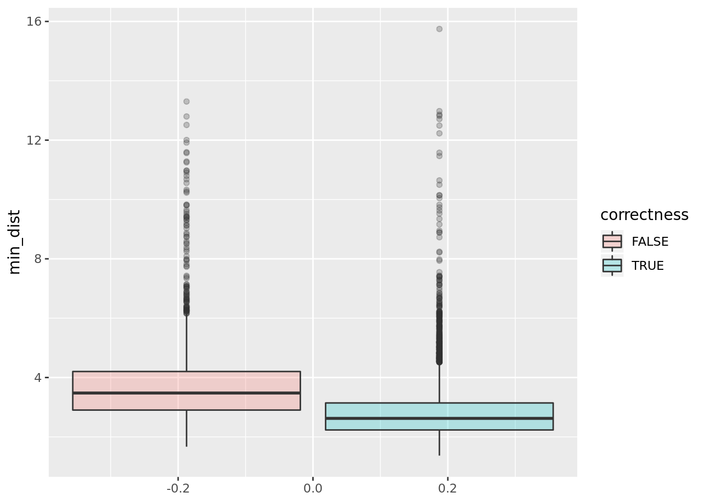
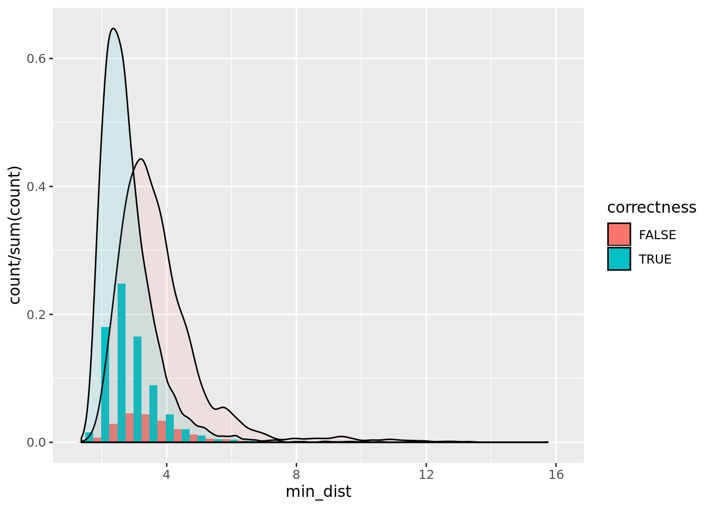

Poor performance diagnosis
Yupei You
Created: 14 AUg 2019, last updated: 03-September-2019 06:09
Last updated: 2019-09-03
Checks: 6 1
Knit directory: workflowr/
This reproducible R Markdown analysis was created with workflowr (version 1.4.0). The Checks tab describes the reproducibility checks that were applied when the results were created. The Past versions tab lists the development history.
The R Markdown is untracked by Git. To know which version of the R Markdown file created these results, you’ll want to first commit it to the Git repo. If you’re still working on the analysis, you can ignore this warning. When you’re finished, you can run wflow_publish to commit the R Markdown file and build the HTML.
Great job! The global environment was empty. Objects defined in the global environment can affect the analysis in your R Markdown file in unknown ways. For reproduciblity it’s best to always run the code in an empty environment.
The command set.seed(20190306) was run prior to running the code in the R Markdown file. Setting a seed ensures that any results that rely on randomness, e.g. subsampling or permutations, are reproducible.
Great job! Recording the operating system, R version, and package versions is critical for reproducibility.
Nice! There were no cached chunks for this analysis, so you can be confident that you successfully produced the results during this run.
Great job! Using relative paths to the files within your workflowr project makes it easier to run your code on other machines.
Great! You are using Git for version control. Tracking code development and connecting the code version to the results is critical for reproducibility. The version displayed above was the version of the Git repository at the time these results were generated.
Note that you need to be careful to ensure that all relevant files for the analysis have been committed to Git prior to generating the results (you can use wflow_publish or wflow_git_commit). workflowr only checks the R Markdown file, but you know if there are other scripts or data files that it depends on. Below is the status of the Git repository when the results were generated:
Untracked files:
Untracked: analysis/inaccurate_transcript_checking.Rmd
Untracked: analysis/inaccurate_transcript_checking.knit.md
Untracked: analysis/inaccurate_transcript_checking.utf8.md
Untracked: docs/figure/inaccurate_transcript_checking.Rmd/
Untracked: docs/img/Poor_Performance/
Unstaged changes:
Modified: analysis/_site.yml
Modified: analysis/index.Rmd
Note that any generated files, e.g. HTML, png, CSS, etc., are not included in this status report because it is ok for generated content to have uncommitted changes.
There are no past versions. Publish this analysis with wflow_publish() to start tracking its development.
Introduction
I selected 25 transcripts with depth between 30 ~ 3001.
There are 25 transcripts and 128 splicing sites in total, the splicing site with bottom 10 accuracy were listed below:
Reverse strand Reads
Site position correlation
Mean method
mean vs max
new vs old
Distance distribution
library(ggplot2)
library(reshape2)
score_f15_t4 = read.csv(file = "~/PhD_proj/pipeline/Validation/score_f15_t4_merge.csv",header = F)
ncol = dim(score_f15_t4)[2]
likelihood_score = score_f15_t4[,seq(5,ncol,3)]
likelihood_score = likelihood_score[!is.na(likelihood_score$V5),]
has_multi_candidates = apply(likelihood_score,1,function(x) sum(!is.na(x)) > 1)
likelihood_score = likelihood_score[has_multi_candidates,]
min_dist = apply(likelihood_score,1,function(x) min(x, na.rm=T))
correctness = apply(likelihood_score,1,which.min) == 1
data <- data.frame(min_dist = min_dist, correctness = correctness)
ggplot(data,aes(y=min_dist, fill=correctness)) + geom_boxplot(alpha=0.25) 
ggplot(data,aes(x=min_dist, fill=correctness)) + geom_histogram(aes(y=..count../sum(..count..)),alpha = 1,position="dodge") + geom_density(alpha=0.1)`stat_bin()` using `bins = 30`. Pick better value with `binwidth`.
l=c()
y=c()
x=seq(0,10,0.01)
for (i in x){
correctness_filtered = correctness[min_dist<i]
y = c(y,sum(correctness_filtered==1)/length(correctness_filtered))
l=c(l, length(correctness_filtered)/length(correctness))
}
ggplot() + geom_line(aes(x,l)) + geom_line(aes(x,y))Warning: Removed 137 rows containing missing values (geom_path).y[length(y)][1] 0.7889364length(correctness)[1] 10318true_reads = likelihood_score[correctness == T,]
false_reads = likelihood_score[correctness == F,]
true_reads_dist = apply(true_reads,1,function(x) min(x, na.rm = T))
#false_reads_dist = apply(false_reads,1,function(x) x[1])
false_reads_dist = apply(false_reads,1,function(x) min(x, na.rm = T))
false_diff = apply(false_reads,1,function(x) abs(min(x, na.rm=T) - x[1]))
true_diff = apply(true_reads,1,function(x) abs(x[1] - x[order(x)[2]]))
ggplot() + geom_density_2d(aes(x=true_reads_dist,y=true_diff,fill = "true",color = "true")) + geom_density_2d(aes(x=false_reads_dist,y=false_diff,fill = "false",color = "false")) + xlab("hardness of matching (distance)") + ylab("confidence (difference of distance)")+scale_color_manual("Legend",values = c("blue","red"))Warning: Ignoring unknown aesthetics: fillWarning: Ignoring unknown aesthetics: fillggplot() + geom_density(aes(x = false_diff,fill = "false"), alpha = 0.3) + geom_density(aes(x = true_diff, fill = "true"), alpha = 0.3) + xlab("Difference of distance") + scale_color_manual("Legend",values = c("red","blue"),aesthetics = "fill") #stat_density_2d(geom = "polygon", aes(x=true_reads_dist,y=true_diff,alpha = ..level.., fill = "true")) +
#stat_density_2d(geom = "polygon", aes(x=false_reads_dist,y=false_diff,alpha = 3/10*..level.., fill = "false"))Distance distribution (mean)
library(ggplot2)
library(reshape2)
score_f15_t4_mean = read.csv(file = "~/PhD_proj/pipeline/Validation/score_f15_t4_mean_merge.csv",header = F)
ncol = dim(score_f15_t4_mean)[2]
likelihood_score_mean = score_f15_t4_mean[,seq(5,ncol,3)]
likelihood_score_mean = likelihood_score_mean[!is.na(likelihood_score_mean$V5),]
has_multi_candidates = apply(likelihood_score_mean,1,function(x) sum(!is.na(x)) > 1)
likelihood_score_mean = likelihood_score_mean[has_multi_candidates,]
min_dist = apply(likelihood_score_mean,1,function(x) min(x, na.rm=T))
correctness_mean = apply(likelihood_score_mean,1,which.min) == 1
data <- data.frame(min_dist = min_dist, correctness_mean = correctness_mean)
ggplot(data,aes(y=min_dist, fill=correctness_mean)) + geom_boxplot(alpha=0.25) ggplot(data,aes(x=min_dist, fill=correctness_mean)) + geom_histogram(aes(y=..count../sum(..count..)),alpha = 1,position="dodge") + geom_density(alpha=0.1)`stat_bin()` using `bins = 30`. Pick better value with `binwidth`.l=c()
y=c()
x=seq(0,10,0.01)
for (i in x){
correctness_filtered = correctness_mean[min_dist<i]
y = c(y,sum(correctness_filtered==1)/length(correctness_filtered))
l=c(l, length(correctness_filtered)/length(correctness_mean))
}
ggplot() + geom_line(aes(x,l)) + geom_line(aes(x,y))Warning: Removed 125 rows containing missing values (geom_path).y[length(y)][1] 0.8286324length(correctness_mean)[1] 10318true_reads = likelihood_score_mean[correctness_mean == T,]
false_reads = likelihood_score_mean[correctness_mean == F,]
true_reads_dist = apply(true_reads,1,function(x) min(x, na.rm = T))
false_reads_dist = apply(false_reads,1,function(x) min(x, na.rm = T))
false_diff = apply(false_reads,1,function(x) abs(min(x, na.rm=T) - x[1]))
true_diff = apply(true_reads,1,function(x) abs(x[1] - x[order(x)[2]]))
ggplot() + geom_density_2d(aes(x=true_reads_dist,y=true_diff)) + geom_density_2d(aes(x=false_reads_dist,y=false_diff), color = "red")ggplot() + geom_density(aes(x = false_diff), fill = "red", alpha = 0.3) + geom_density(aes(x = true_diff), fill = "blue", alpha = 0.3) + xlab("hardness of matching") + ylab("confidence")Distance distribution (mean vs sum)
color = c()
for (i in 1:length(correctness_mean)){
if ( correctness_mean[i] == T && correctness[i] == F) {color = c(color,'red')}
else{color = c(color,'black')}
}
b = correctness == F
a = correctness_mean == T
plot(likelihood_score[a*b==1,1],likelihood_score_mean[a*b==1,1],col = "red")
b = correctness == T
a = correctness_mean == F
points(likelihood_score[a*b==1,1],likelihood_score_mean[a*b==1,1],col = "blue")
abline(1,1)#test_index = apply(likelihood_score_mean,1,which.min) == apply(likelihood_score,1,which.min)
#test = likelihood_score[test_index,]
#correctness_test = apply(test,1,which.min) == 1Single site inspection
R2_26_1 junction 6 has lowest accuracy, but it has 9 candidates. The correlation between the number of accracy and the accuraccy will be investigated later. I will start with R1_22_2 junction 2 , which has only 2 candidates but perform really bad in characterisation.
R1_22_2 junction 2
splicing site information
pipeline_dir=/home/ubuntu/PhD_proj/pipeline/
echo Candidate Information:
cat $pipeline_dir/Candidates/README.txt
sed -n '2p' $pipeline_dir/Candidates/R1_22_2_candidate.txt
echo transcript BED format
grep R1_22_2 $pipeline_dir/BED/annotation.bedCandidate Information:
format:
Candidate_motif1, Candidate_motif2 ..., start_transcript_position, end_transcript_position, number_of_support_by_mapper
(end of REANDME.txt).
TGAGGTATCGCAAGCATCAGTTGGAAATCCCGCCC,TGAGGTATCGCAAGCTTGGAAATCCCGCCC,478,513,66
transcript BED format
chrIS 6412428 6437487 R1_22_2||R1_22 1000 - 6412428 6437487 196,196,196 6 499,49,103,149,146,95, 0,1110,7527,16532,20907,24964,The transcript is in reverse strand with length 1037, the corresponding location in transcript is 479~5042
Plot reads and Candidates
Tombo plot The highlighted part is the difference between candidates 

model: TATCGCAAGCATCAGTTGGAAATCC (true)

model: TATCGCAAGCTTGGAAATCC (false)
sessionInfo()R version 3.4.4 (2018-03-15)
Platform: x86_64-pc-linux-gnu (64-bit)
Running under: Ubuntu 18.04.3 LTS
Matrix products: default
BLAS: /usr/lib/x86_64-linux-gnu/blas/libblas.so.3.7.1
LAPACK: /usr/lib/x86_64-linux-gnu/lapack/liblapack.so.3.7.1
locale:
[1] LC_CTYPE=en_AU.UTF-8 LC_NUMERIC=C
[3] LC_TIME=en_AU.UTF-8 LC_COLLATE=en_AU.UTF-8
[5] LC_MONETARY=en_AU.UTF-8 LC_MESSAGES=en_AU.UTF-8
[7] LC_PAPER=en_AU.UTF-8 LC_NAME=C
[9] LC_ADDRESS=C LC_TELEPHONE=C
[11] LC_MEASUREMENT=en_AU.UTF-8 LC_IDENTIFICATION=C
attached base packages:
[1] stats graphics grDevices utils datasets methods base
other attached packages:
[1] reshape2_1.4.3 ggplot2_3.2.1
loaded via a namespace (and not attached):
[1] Rcpp_1.0.1 knitr_1.23 magrittr_1.5 workflowr_1.4.0
[5] MASS_7.3-49 munsell_0.5.0 colorspace_1.4-1 rlang_0.4.0
[9] plyr_1.8.4 stringr_1.4.0 tools_3.4.4 grid_3.4.4
[13] gtable_0.3.0 xfun_0.7 withr_2.1.2 git2r_0.25.2
[17] htmltools_0.3.6 yaml_2.2.0 lazyeval_0.2.2 rprojroot_1.3-2
[21] digest_0.6.19 tibble_2.1.3 crayon_1.3.4 fs_1.3.1
[25] glue_1.3.1 evaluate_0.14 rmarkdown_1.13 labeling_0.3
[29] stringi_1.4.3 compiler_3.4.4 pillar_1.4.2 scales_1.0.0
[33] backports_1.1.4 pkgconfig_2.0.2